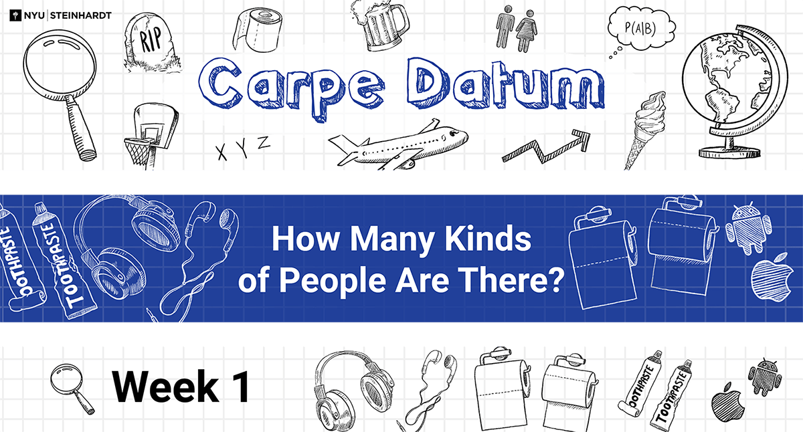
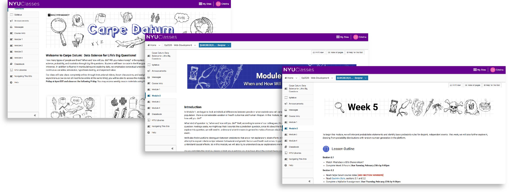
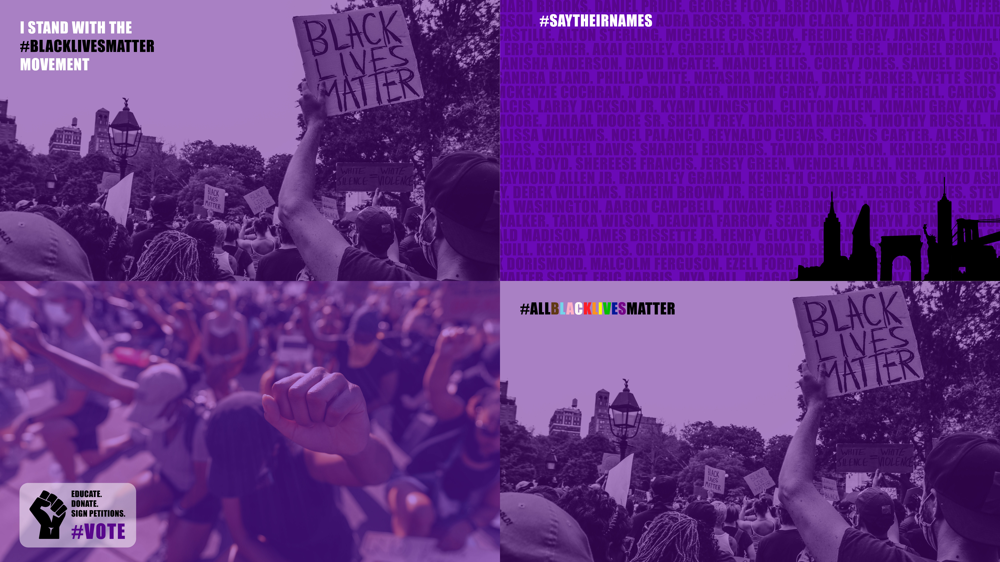

Portfolio Website
Steinhardt Technology Services supports NYU Steinhardt by offering IT services, course design services and training workshops to students, faculty and staff. My role there as a graphic designer requires me to collaborate with administrators, faculty, UX researchers and instructional designers to produce visual assets for online courses, tech infographics, marketing emails, slide templates, and more.
Carpe Datum course banners.
Carpe Datum on NYU Classes.
A sample of the module and lesson banners I designed for Carpe Datum, an online introductory course on data science. The professor's intention was for his students to be able to look at the world through an inquisitive lense, so I chose to incorporate illustrations that look like sketches in notebooks.
NYU Steinhardt Teach Camp marketing email.
A marketing email I illustrated and designed for NYU Steinhardt's camp-themed virtual workshop conference. The focus of the conference was on preparing faculty and staff for remote-learning in response to the COVID-19 pandemic, so we wanted to present the information with a positive and playful outlook, using imagery of the campus in the summer.
NYU Usability Lab illustrations.
A selection of illustrations and icons I designed for the NYU Usability Lab. The lab was putting together a playbook that outlined their workflow and needed illustrations that depicted each concept in a manner that was consistent with their existing style.
NYU Black Lives Matter Zoom backgrounds.
Zoom backgrounds I designed in collaboration with NYU's Office of Equity, Belonging & Community Action to offer students, faculty and staff the opportunity to express solidarity with the Black Lives Matter movement. We wanted to ensure the backgrounds were inclusive and represented the LGBTQ community within the movement.
Academic Tools Risk Mitigation infographic.
An infographic I visualized for STS administrators in response to the university's move to remote-learning. The infographic helps faculty ensure that they are using compliant technology for their courses.
Academic Technology animated illustration.
A fun illustration I made and animated for Academic Technology, a subset of Steinhardt Technology Services.